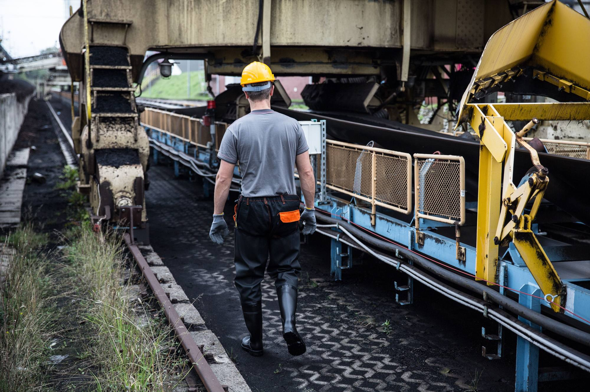
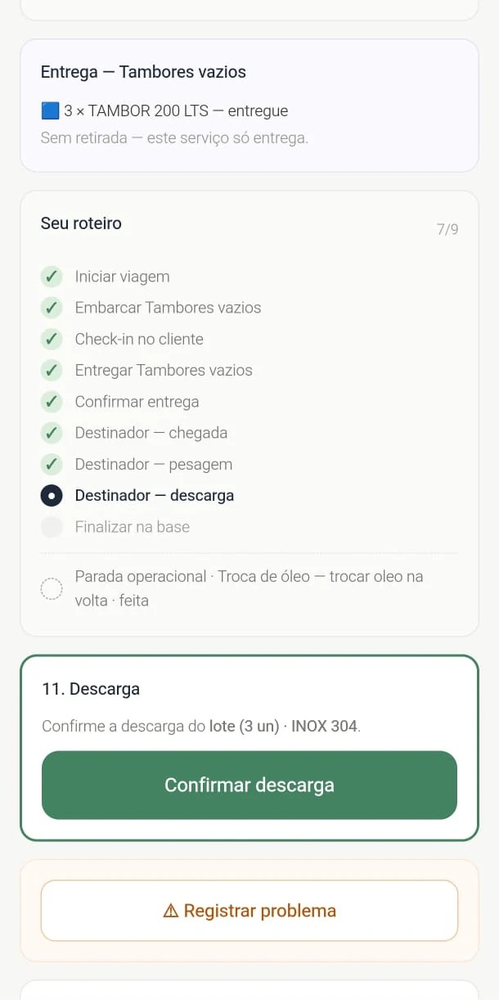
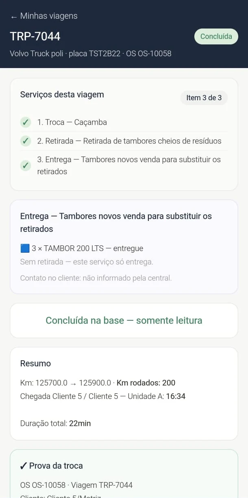
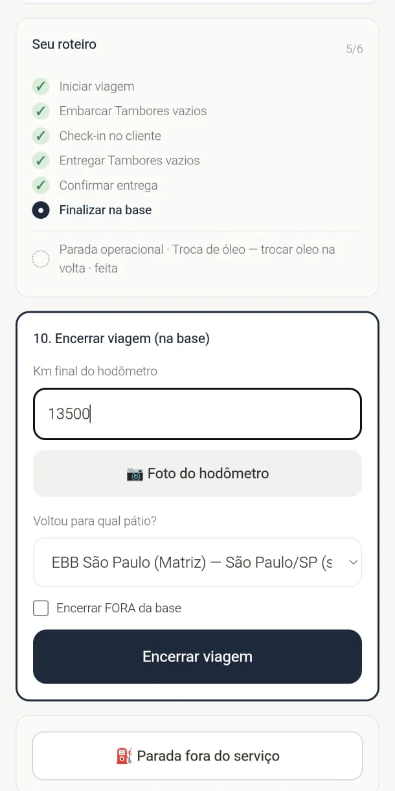
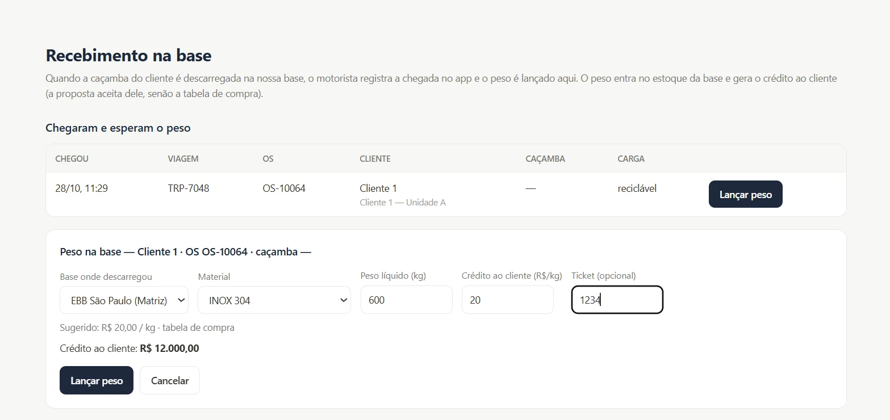

PARA GERENCIADORAS DE RESÍDUOS E SERVIÇOS AMBIENTAIS
Chega de ativos perdidos e serviços sem cobrança.
Rastreie, comprove e cobre pelo que executou.
Conecte propostas, ordens de serviço e viagens. Registre a execução em campo, prepare os MTRs e reúna quantidades, evidências e valores para apoiar seu faturamento.

Com o Agente, sua equipe consulta informações e prepara ações pelo Telegram, com confirmação antes de gravar e acesso conforme suas permissões.
O CICLO COMPLETO
Da proposta ao faturamento, sem perder nada no caminho.
Cada etapa nasce da anterior. A proposta aprovada vira ordem de serviço, a ordem de serviço vira viagem a campo, e a execução registrada vira informação para faturar.
- 01Comercial
- 02Ordem de serviço
- 03Viagem
- 04Execução em campo
- 05Recebimento na base
- 06MTR
- 07Evidências
- 08Faturamento

ONDE A OPERAÇÃO ACONTECE
No pátio, na estrada e no cliente.
O Ciclo acompanha cada etapa onde ela acontece e leva o registro para o escritório na mesma hora.
CONTROLE DA OPERAÇÃO
Seus ativos, seu histórico e os serviços executados. Tudo em um só painel.
Da caçamba instalada no cliente ao serviço concluído, conecte equipamentos, propostas, ordens de serviço e viagens em uma operação com histórico e evidências.

Ativos com localização e histórico
Consulte quais equipamentos estão na base ou nos clientes, a qual filial pertencem e sua situação conforme o último movimento registrado.
Serviço vinculado à proposta
Cada ordem de serviço nasce da proposta aprovada e reúne o escopo e os itens da operação. Na programação, as OS são organizadas em viagens, com veículo e motorista.
Execução com evidências para faturar
O app de campo registra as etapas da execução, fotos e ocorrências. O peso real registrado na recepção encerra a viagem e a OS, reunindo quantidades, documentos e valores para apoiar a medição e o faturamento.
APP DE CAMPO DO MOTORISTA
O motorista segue o roteiro. Etapa por etapa, no celular.
No celular, o motorista vê os serviços da viagem, avança etapa por etapa e registra o que aconteceu.
- Roteiro passo a passo, da saída até a volta para a base.
- Check-in no cliente, chegada e confirmação de entrega.
- Km rodados ao encerrar a viagem, com campo para foto do hodômetro.
- Registro de problemas direto do campo.
- Resumo e prova de cada serviço concluído.



DO CAMPO AO FATURAMENTO
O peso lançado vira valor. O serviço executado vira cobrança.
Quando a caçamba é descarregada na base, o peso lançado entra no estoque e gera o valor do material, quando ele tiver valor, pela proposta aceita ou pela tabela de compra. Valores a pagar e a receber ficam reunidos para o financeiro.



AGENTE DE IA DO WISEIA CICLO
Você pede.
O Agente prepara.
Você confirma.
Do comercial à operação, trabalhe por conversa no Telegram. Consulte informações na hora e confira cada alteração antes de gravar.
Comercial
Cadastros por CNPJ, propostas com cálculo de custos e margens, aprovações por alçada, agenda, acompanhamento comercial e análise de editais.
Operação
Abertura e edição de OS, organização de viagens, verificação de conflitos, apontamentos e consultas de ativos, estoques e pendências de MTR e CDF. Preparação e acompanhamento de MTR, com CDF vinculado à OS.
A emissão oficial do MTR é concluída pelo usuário no SIGOR/SINIR.
Gestão
Resumo da manhã nos dias úteis e consulta de valores e pendências que apoiam o trabalho do financeiro.
Para diretoria, gestores, escritório e coordenadores.
Motoristas e terceiros usam o app de campo.

VOG · Visita Operacional Guiada
A visita acontece no cliente.
A proposta já avança no escritório.
O Agente conduz a visita comercial por etapas no Telegram, organiza fotos, textos e áudios e gera o relatório em PDF. Assim que enviado, ele fica disponível no painel para a equipe responsável pelo cliente.
- Roteiro guiado: segurança, armazenamento, resíduos e documentação.
- Fatos, sugestões da IA e pendências separados no relatório.
- Informações para o escritório adiantar a proposta antes da volta do vendedor.
Disponível para visitas comerciais. O acompanhamento operacional está em desenvolvimento.
Veja o Ciclo na realidade da sua operação.
Converse com a Wiseia e conheça como conectar propostas, ativos e serviços executados às informações para faturar.